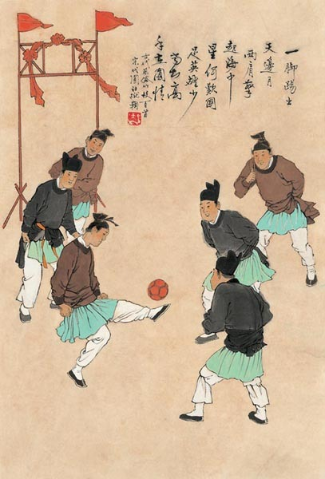
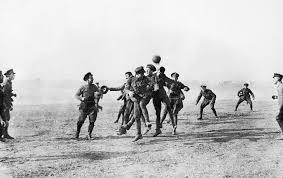
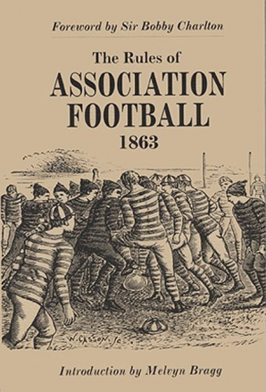
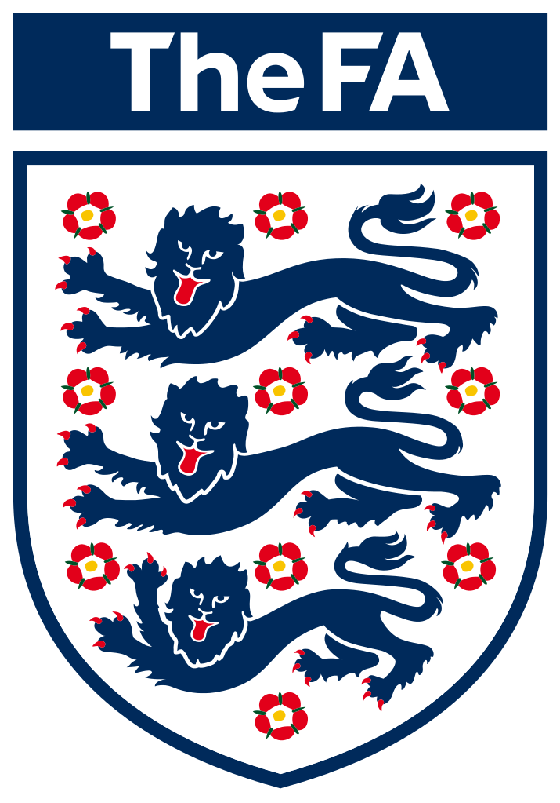

 Soccer was first played in China during the second and third centuries B.C. It was called Ts’u Chu, Cuji or kickball. The ball used to be the head of their enemies. They dribbled balls and kicked them into small nets. As soccer advanced they started using leather balls.
 It is said during medieval times, the old form of soccer allowed kicking, punching and biting. People then grew fond of the game and the competition grew fierce. It got so wild that there were frequent incidents of violence during the game. King Edward III then banned soccer, in 1365, due to the many incidents of violence indulged in the sport.
 In 1851, Cambridge University made new rules that only allowed tripping and shin kicking. The rules are now called Cambridge Rules. They are also notable for allowing goal kicks, throw-ins, and forward passes.
 Soccer began to spread because British sailors, traders, and soldiers, they introduced the sport to different parts of the globe. Modern day soccer was established in 1863. In 1869, the Football (Soccer) Association reinforced the rules. As the sport developed, more rules were implemented. For example, the penalty kick was introduced in 1891. Red and yellow cards were introduced during the 1970 World Cup finals, tackles from behind becoming red-card penalties in 1998.
Back to the Top